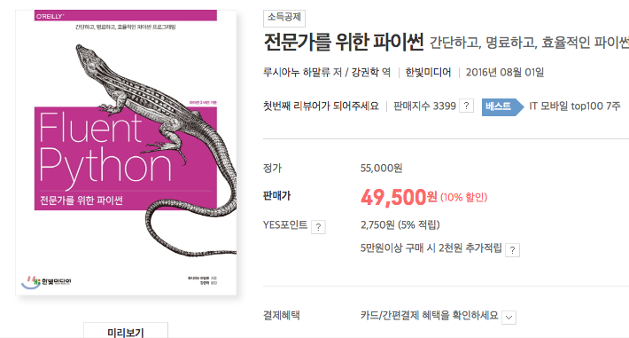

Python 연산자 오버로딩을 활용하기
Intro
Top of Tower GameServer(이하 tot)를 Python + Django 스택으로 구현하면서
가을과 겨울 사이에 Mason과 같이 공부한 Fluent Python을 프로젝트에 녹여볼려고 했다.
 파이썬을 파볼 생각이라면 강력 추천
Mason과 Fluent Python(전문가를 위한 파이썬) 스터디를 진행하면서 Chapter13에서 연산자 오버로딩을 만났다.
사실 우리는 연산자를 숫자연산에만 사용하는 경향이 있다. 연산자는 논리표현 중 하나고 우리는 논리 표현으로서
더 새롭게 정의할 수 있다.
행렬의 곱이 숫자의 곱과 방식이 조금 다르듯, 게임 캐릭터에 써보는게 좋겠다는 이야기가 나왔다.
tot라는 게임은 캐릭터를 조합하고 더 강하게 키워서 타워의 몬스터들을 때려 눕히는 게임이다. (아직 런칭되지 않아 보안상 말을 줄이겠다.) 두개의 캐릭터를 합쳐서 도박(?)성으로 더 강한 캐릭터를 만들 수 있다. 이와 관련해서 캐릭터 + 캐릭터라는 연산자오버로딩을 활용해보는 쪽으로 설계해보았다.
캐릭터 설계
간단하게 블로그 포스트용으로 축약해보았다.
assume
캐릭터 데이터는 4가지 속성을 가진다. (물, 불, 바람, 흙)
캐릭터 데이터는 성을 가진다. (1성에서 5성까지)
캐릭터 데이터는 레벨을 가진다.
Django 클래스 코드를 보자:
class Character(models.Model):
id = models.AutoField(primary_key=True)
water = models.IntegerField(default=10, verbose_name='물 속성 공격력')
fire = models.IntegerField(default=0, verbose_name='불 속성 공격력')
wind = models.IntegerField(default=0, verbose_name='바람 속성 공격력 ')
earth = models.IntegerField(default=0, verbose_name='흙 속성 공격력')
star = models.IntegerField(default=1, verbose_name='성')
level = models.IntegerField(default=1, verbose_name='캐릭터 레벨')
def get_property_dict(self):
return {
WATER: self.water,
FIRE: self.fire,
WIND: self.wind,
EARTH: self.earth
}
두가지 캐릭터를 조합, 합성하는 기능을 구현하려고한다.
character + character는 논리적으로도 이해하기 쉬운 코드이다.
우린 특별메서드 __add__()를 이용해 이를 간단하고도 멋지게 구현할 수 있다.
...
def __add__(self, other):
properties_1 = self.get_property_dict()
properties_2 = other.get_property_dict()
result_prop = get_dominant_properties(properties_1, properties_2)
max_item = max(result_prop.items(), key=operator.itemgetter(1))
percent = self.level * 0.5 + other.level * 0.5
rand_int = randint(1, 100)
next_star = self.star
if rand_int < percent:
next_star = next_star + 1
new_character = Character.objects.create(cls=max_item[0], star=next_star, state=READY)
set_character_properties(new_character, result_prop)
return new_character
else:
new_character = Character.objects.create(cls=max_item[0], star=next_star, state=READY)
set_character_properties(new_character, result_prop)
return new_character
어려워 보이지만 사실 천천히보면 간단한 코드이다. 살펴보자.
__add__()라는 연산자 특별 메서드를 오버로딩했다.- a + b라는 연산을 할때 self 는 a, other는 b가 된다.
- 각각의 프로퍼티(속성)객체를 가져온다. get_property_dict()
- 좀더 높은 속성들을 추려주는 get_dominant_properties()를 통해 result_prop을 반환받는다.
- 기타 레벨등의 수치와 랜덤 수치를 통해 합성결과가 될 레벨, 성을 정해 새로운 캐릭터 데이터를 반환해준다.
주의사항:
결코 피연산자를 변경하면 안되며 새로운 객체를 생성해서 결과를 반환해야한다.
이젠 합성 요청이 들어오는 메서드에서 사용해보자:
def synthesize(request, player_id):
...
new_character = char1 + char2 // 두 캐릭터를 합성하고 새로운 캐릭터를 받아옵니다.
player.characters.add(new_character) // 플레이어에게 새로운 캐릭터 데이터를 추가합니다.
player.characters.remove(char1) // 합성에 사용된 캐릭터 제거
player.characters.remove(char2) // 합성에 사용된 캐릭터 제거!
마무리
__add__() 메서드를 객체에 오버로딩해서 중위연산자를 커스터마이징해보았다.
예제코드는 좀더 이해하기 쉬운 설명을 위해 심플 코딩으로 구현한 것이고 단단하게 코딩하고자한다면 피연산자들의 타입검증과 같은 TypeError부분이 이 추가되어야한다. isinstace()를 활용하는 것도 좋은 방법이다.
너무 남용할 경우, 프로젝트의 확장성을 헤칠수 있으니 조심히 주의하여 사용하기 바란다